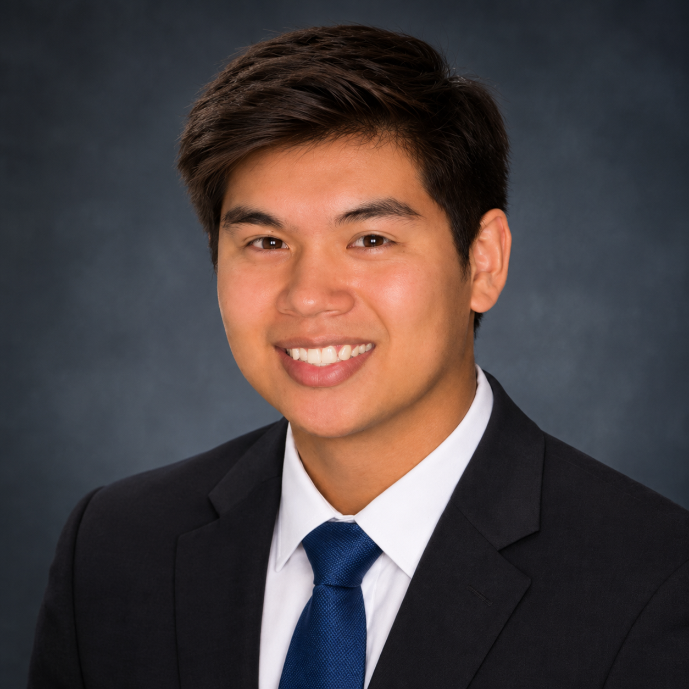

AIRCRAFT / FLIGHT TESTING
Foam Aircraft Build & Flight Testing
Built and flight-tested a foamboard RC aircraft, investigating center-of-gravity and handling challenges through repeated tests and modifications.
VIEW CASE STUDYHELLO, I'M JOSIAH.
I'm studying aerospace engineering at Iowa State University, but my interest in engineering goes well beyond the classroom. From building and flying aircraft to working with FPV drones and developing my own software, I enjoy figuring out how things work and turning ideas into something real.

I'm Josiah Newill, an aerospace engineering student at Iowa State University. I've always enjoyed understanding how things work, but what interests me most is taking that understanding and applying it to something I can actually build, test, and improve.
Aviation has become one of my biggest interests, especially through building and flying RC aircraft and FPV drones. These projects have given me opportunities to experiment with aircraft construction, electronics, control systems, and flight characteristics. Some of my most valuable learning experiences have come from projects that didn't work the way I expected, where figuring out what went wrong became just as rewarding as getting something to work.
Outside of engineering, I've developed leadership and communication skills through work, volunteering, and student activities. These experiences have taught me the importance of working with others, taking responsibility, and being willing to learn from different perspectives.
As I continue studying aerospace engineering, I'm particularly interested in aircraft systems, design, and research. I hope to gain experience through internships and engineering projects that challenge me to apply what I've learned while continuing to develop the skills needed for a career in aerospace.
FEATURED PROJECT
BACKGROUND
B.S. Aerospace Engineering | Expected May 2029
My experience combines hands-on aircraft projects, technical problem-solving, and leadership through employment, volunteering, and student activities.
I also hold a current FAA Part 107 Remote Pilot Certificate.
View my resume →